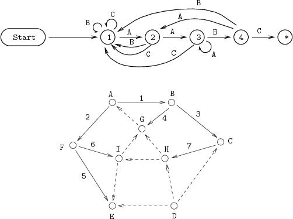

|
|
En toi Pythmeni tes TeXnopoleos
［電脳世界の奥底にて］ |
BXeepic パッケージ
～pict2e で eepic な世界～
- 2016/04/03： BXpict2e のページから bxeepic に関する内容を分離して作成。
概要
標準の LaTeX2e で簡単な図を描くための機能として picture 環境があるが、これには「可能な線分の傾きが限定されている」 等の非常に強い制限がある。 もともと TeX には描画のための機能が全く備わっていないので、 picture 環境では予め描かれる図形の断片を「文字」として集めた 「フォント」を用いて「描画」しているが故の制約である。 LaTeX の中での描画機能を拡充を目指して、DVIウェアの拡張機能 （PostScript 直接記述、tpic 拡張、等）を利用する （ただし可搬性が犠牲になる）という方法が採られてきた。 この方法の中には、PSTricks や PGF のように、 自己完結した非常に高度な機能をもつパッケージがある一方、 「標準の picture 環境について、その制限を除去し、 また必要最低限の基本的な機能のみを追加する」 という考えで開発された軽量なパッケージが存在する。 後者は、文書作成者に「重いパッケージ」の使用を求めないという点で、 外部の描画ソフトからの LaTeX ソース形式でのインポートや、 他の「少し高度な描画」（例えば、表のセルに斜線を入れる、等） が含まれる LaTeX パッケージからの使用により適しているといえる。 このような軽量なパッケージの代表例には次のようなものがある：
- epic パッケージ： 作者は Sunil Podar。 DVIドライバの拡張を必要とせず、標準の picture 環境で用いられる機構のみを用いて、 任意の 2 点間を結ぶ実線・点線・破線の近似的な描画を実現している。 前述の強い制約の枠内なので、実線に関してはどうしても誤差が目立つ。
- eepic パッケージ： 作者は Conrad Kwok。 標準の picture 環境および epic パッケージの機能について、 DVIドライバの「tpic 拡張」 を用いることで前述の制約を取り払い、 任意の傾きの実線・破線や任意の大きさの円を描けるようにしたもの。 楕円や円弧の描画や塗りつぶしの指定などの独自の追加機能もある。
- pict2e パッケージ： 作者は Hubert Gäßlein、Rolf Niepraschk、Josef Tkadlec。 目的は eepic と同じで picture 環境で自由な描画を可能にしたもの。 graphicx や color パッケージと同じく、DVI ウェアを指定して、 それが対応する拡張機能 （現状では PostScript または PDF 描画命令の直接記述機能が利用可能） を利用するという方式をとる。 ちなみに、このパッケージは、 元々は LaTeX2e の標準パッケージとなる予定のものであったが開発中止となり、 LaTeX2e の登場から 10 年を経て有志の手により実装されたという経緯をもつ。
tpic 拡張機能は、dvips・dvipdfm(x)・dviout・xdvi
等の数多くの DVI ウェアでサポートされているため、
pdfTeX 登場以前は、epic + eepic の組み合わせが「軽量な拡張 picture」
の事実上標準の地位を占めていた。
しかし、pdfTeX では tpic 拡張機能はサポートされなかったため、eepic は動作しない。
（pdfTeX は DVI 形式を扱わないため、自身が「DVIウェア」の役割を兼ねる。）
従って、pdfTeX の使用が LaTeX の世界で主流になるに伴い、「軽量な拡張 picture」
の役割は後で登場した pict2e に移行しつつある。
しかし、eepic で提供されていて pict2e にはない有用な機能――例えば破線
（\dashline）、楕円（\ellipse）等――もあるので、
epic + eepic を単純に pict2e
に置き換えることは必ずしもできないという問題がある。
bxeepic パッケージは、pict2e において、epic + eepic の機能 （破線や楕円など）を実現するものである。 （すなわち、tpic 拡張でなく pict2e が使うものと同じ拡張機能を利用して描画する。） 本家の epic + eepic に比べると、以下のような利点がある。
- pdfTeX 等の tpic 拡張非対応の DVI ドライバでも動作する。
- 何らかの理由で pict2e の理由が前提になっている場合で、 eepic にしかない機能を使うことができる。 （本物の eepic と pict2e は、当然ながら同時に読み込むことができない。）
- epic、eepic のバグ、および tpic 拡張の本質的な欠点を回避することができる。
参考： 原版の epic、eepic には「余計な空白が入る」という有名なバグがある。 tpic 拡張の欠点は以下の通り： 「線幅が 0.07227pt 単位でしか指定できないので、LaTeX で標準的な 0.4 pt にしようとすると相当（10％）の誤差が出る」 「仕様の不明確点のため実装により線がずれることがある」 「スプライン曲線に少し癖がある」。
対応環境
- TeX 処理系： LaTeX2e 汎用
- DVIドライバ： pict2e パッケージに対応するもの。 （※ dvipdfmx に完全に対応させている。）
- 前提パッケージ： pict2e パッケージ （epic、eepic パッケージは不要）
bxeepic パッケージ
bxeepic パッケージは、pict2e において、epic + eepic の機能 （破線や楕円など）を実現するものである。
パッケージの読込
\usepackage で bxeepic パッケージを読み込む時、
もし pict2e が未読込でれば自動的に読み込まれる。
この際に、pict2e に渡すドライバ指定を bxeepic
のオプションとして指定できる。
（つまりここでドライバ指定を行わない場合、
pict2e のドライバ指定はシステム既定値となる。）
もし、pict2e が既に読み込まれている場合は、
bxeepic に指定されたドライバ指定は無効となる。
\documentclass[a4paper]{article}
% pict2e と一緒に読み込む場合
\usepakcage[dvips]{bxeepic} % オプションでドライバを指定
% pict2e を別に読み込む場合は以下の 2 行のようにする
%\usepackage[dvips]{pict2e}
%\usepackage{bxeepic} % この場合はドライバ指定は不可
使用法
基本的に、pict2e の提供する picture の拡張の上に、 epic と eepic の命令を追加しているだけなので、 機能についての説明については、 epic のマニュアルや eepic のマニュアル、 および pict2e のマニュアルを 参照してほしい。
- epic + eepic の機能で bxeepic でサポートしていないもの：
- 塗りつぶし指定：
\blacken、\whiten、\shade、\texture、\filltype。 - 「点線の破線」、つまり
\dashlineの 2 番目のオプション引数 （指定しても無視される）。 - 「点形状の指定付の点線」、つまり
\dottedlineのオプション引数 （指定しても無視される）。
- 塗りつぶし指定：
- epic と eepic で仕様が異なる部分については、eepic
の仕様に合わせている。
例えば、
\drawlineにおいて 0 以上の stretch 値は全て同じ結果になる。 - さらに eepic と pict2e で仕様が異なる部分については、pict2e
の仕様を踏襲している。
例えば、
\linethicknessは eepic の\allinethicknessの動作をする。 - ただし、
\arc命令は pict2e と eepic のどちらの書式も使える。\arc{...}{...}{...}という構文になっていたら、 eepic の書式と解釈する。 - epic + eepic の描画結果を完全に再現することは意図していない。
例えば、
\dashlineによる折れ線は「一度に描画」している （つまり一回の stroke 命令で描いている； join や miter 指定を正しく反映するため）ので、 節点のところに「線片部分」が乗るとは限らない。 また、同様に ...join 環境でも「後で折れ線を一度に描画」 しているので、eepic とは描画順序が異なることになる。 - bxeepic が読み込まれると、epic と eepic の両パッケージを「読み込み済」 と扱われるようにしている。 つまり、その後で、「epic／eepic を自動的に読み込みその機能を利用する」 パッケージを読み込んだ場合、 「eepic と pict2e が両方読み込まれて衝突する」のではなく 「該当パッケージが bxeepic の機能（つまり pict2e の枠組） を利用するようになる」はずである。
サンプル
下の画像は eepic のマニュアルに掲載されている図を 実際に組版したものである。 どちらも picture の中身は原版から全く変えていない。
- 左は pict2e + bxeepic を使って、pdfLaTeX で組版した。
- 右は epic + eepic を使って、LaTeX + dvipdfmx で組版した。
|

|
|